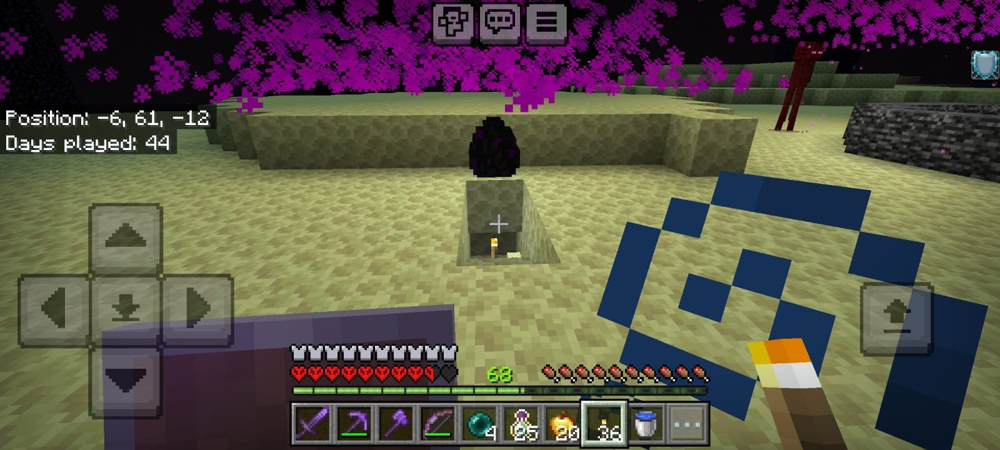
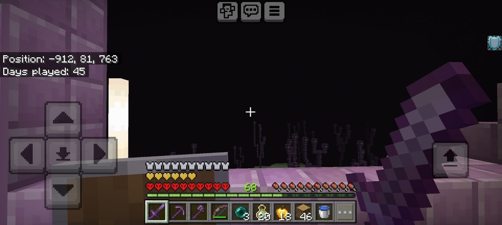
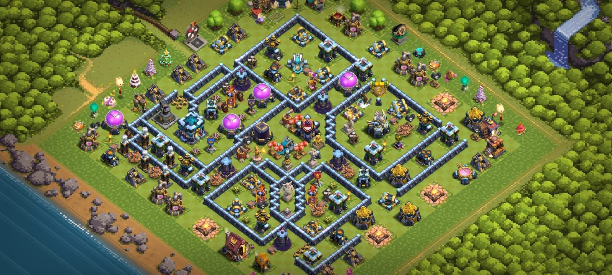
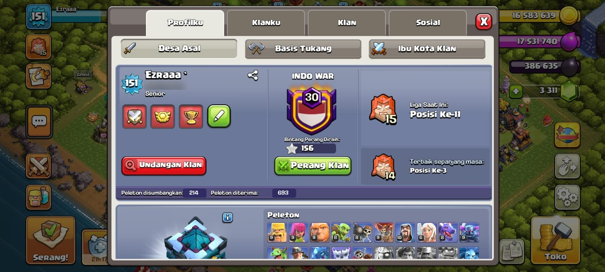
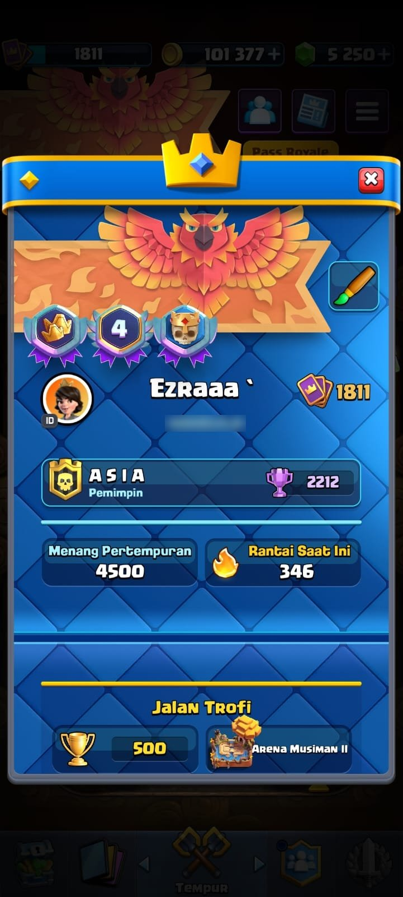
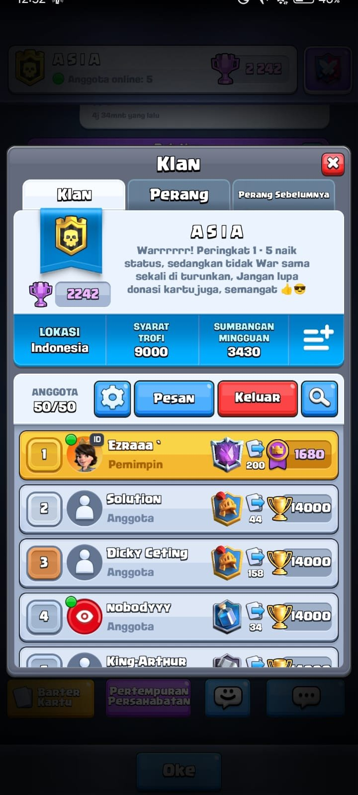
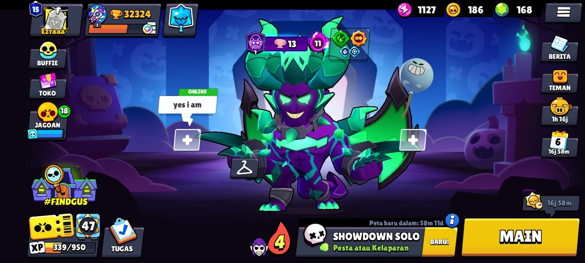
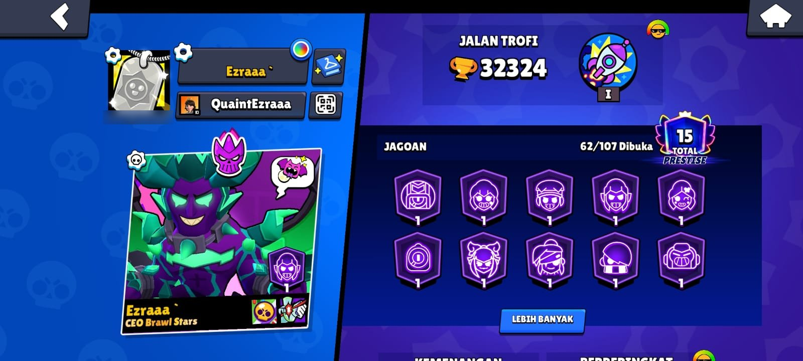

Minecraft adalah game sandbox di mana kamu membangun, menjelajah, dan bertahan hidup di dunia blok 3D tanpa batas. Tidak ada misi wajib, jadi kamu yang menentukan tujuannya.
Mode permainan
Survival: Kumpulkan sumber daya, cari makanan, dan lawan monster saat malam.
Creative: Blok tanpa batas dan bisa terbang, cocok untuk membangun struktur besar.
Langkah pertama di Survival
Pukul pohon untuk mendapat kayu, lalu buat crafting table.
Buat kapak dan pickaxe kayu, lalu ganti ke batu begitu kamu punya cobblestone.
Bangun tempat berlindung sederhana sebelum malam pertama.
Buat kasur dari 3 wol dan 3 papan kayu, lalu tidur untuk mengatur titik respawn.
Tips
Kalau sudah malam dan belum punya rumah, gali ke samping ke dalam bukit dan tutup pintunya dengan blok. Monster tidak bisa masuk.
Command yang sering dipakai
Command diketik di chat setelah menekan tombol T. Pastikan cheat diaktifkan di dunia kamu.
Command
Fungsi
/gamemode creative
Pindah ke mode Creative
/time set day
Mengubah waktu menjadi siang
/give @s diamond 64
Memberi dirimu 64 diamond
/tp @s ~ ~10 ~
Teleport 10 blok ke atas dari posisimu
/weather clear
Menghentikan hujan atau badai
Kesalahan umum pemula
Menggali lurus ke bawah, sehingga bisa jatuh ke lava atau gua.
Berkeliling tanpa membawa makanan dan obor.
Tidak menyimpan item penting di dalam chest sebelum menjelajah jauh.
Peringatan
Kalau mati di Survival, semua item di inventory jatuh di lokasi kematian dan hilang setelah sekitar 5 menit.
Dari dunia saya
45 hari dimainkan
Dimensi The End
Dragon Egg

Hari ke-44: Dragon Egg di pulau utama The End.

Hari ke-45: menjelajah pulau luar The End.
Clash of Clans
Clash of Clans (CoC) adalah game strategi di mana kamu membangun desa, melatih pasukan, dan menyerang pemain lain. Kamu juga bisa bergabung ke Clan untuk ikut Clan War.
Fokus utama
Naikkan level Town Hall (TH) untuk membuka bangunan dan pasukan baru.
Atur tata letak base agar pertahanan tidak mudah ditembus.
Aktif di Clan untuk memenangkan perang dan mendapat hadiah.
Sumber daya
Resource
Dipakai untuk
Gold
Membangun dan meng-upgrade pertahanan serta dinding
Elixir
Melatih pasukan dan meng-upgrade bangunan non-pertahanan
Dark Elixir
Pasukan gelap dan upgrade Hero
Gems
Mempercepat proses dan membeli builder tambahan
Strategi serangan populer
Queen Charge: Archer Queen berjalan di depan, didukung Healer.
Hog Riders: Pasukan cepat yang menargetkan pertahanan musuh.
LavaLoon: Lava Hound menarik tembakan, lalu Balloon menghancurkan base.
Tips
Selalu sisakan builder untuk meng-upgrade Laboratory, karena pasukan yang kuat sama pentingnya dengan base yang kuat.
Kesalahan umum pemula
Menaikkan Town Hall terlalu cepat sebelum pertahanan dan pasukan ikut di-upgrade.
Menghabiskan Gems untuk hal yang bisa ditunggu.
Menyerang tanpa mengintip dulu lokasi Clan Castle dan pertahanan musuh.
Peringatan
Jangan menyimpan semua resource di storage yang sama. Letakkan di tengah base agar tidak mudah dijarah.
Dari akun saya
Level 151
Clan INDO WAR (Lv. 30)
156 bintang perang

Base layout saya dengan susunan dinding berlapis.

Profil: 214 pasukan disumbangkan, 693 diterima.
Clash Royale
Clash Royale memadukan kartu koleksi, tower defense, dan strategi cepat 1v1 atau 2v2 secara real-time. Tujuannya menghancurkan menara lawan sebelum menaramu yang hancur.
Dasar yang harus dikuasai
Elixir Management: Elixir maksimal 10 dan terisi otomatis, jadi jangan menghabiskannya tanpa rencana.
Deck Building: Susun 8 kartu yang saling melengkapi (Tank, Spell, Support, dll.).
Win Condition: Kartu utama yang kamu andalkan untuk menghancurkan menara, misalnya Hog Rider.
Tingkat kelangkaan kartu
Rarity
Keterangan
Common
Paling mudah didapat dari Chest
Rare
Lebih jarang, dengan statistik lebih kuat
Epic
Butuh banyak kartu untuk di-upgrade
Legendary
Sangat langka dan punya kemampuan unik
Champion
Punya skill aktif yang bisa dipakai saat bertarung
Contoh deck: Hog Cycle
Deck cepat dengan rata-rata elixir 2.6, cocok untuk belajar siklus kartu.
Kartu
Elixir
Peran
Hog Rider
4
Win condition
Musketeer
4
Support jarak jauh
Ice Golem
2
Tank murah
Ice Spirit
1
Pemutar siklus
Skeletons
1
Pemutar siklus
Cannon
3
Pertahanan bangunan
Fireball
4
Spell area
The Log
2
Spell kecil
Tips
Hitung elixir lawan. Kalau dia baru saja memakai kartu mahal, itu saat terbaik untuk menyerang.
Dari akun saya
4.500 kemenangan
Win streak 346
Pemimpin clan ASIA

Profil: 4.500 kemenangan dan rantai menang 346.

Clan ASIA penuh, 50 dari 50 anggota.
Brawl Stars
Brawl Stars adalah game multiplayer fast-paced 3v3 dan Battle Royale buatan Supercell. Kamu memilih karakter unik yang disebut Brawler, masing-masing dengan gaya bermain berbeda.
Kelas Brawler
Kelas
Contoh
Gaya bermain
Damage Dealer
Colt
Damage tinggi, nyawa sedang
Tank
Frank
Nyawa besar, bertarung jarak dekat
Marksman
Piper
Menembak akurat dari jauh
Artillery
Dynamike
Serangan melengkung melewati tembok
Assassin
Mortis
Gesit dan menyerang tiba-tiba
Support
Poco
Menyembuhkan dan membantu tim
Controller
Gale
Mengatur ruang dan menahan musuh
Mode permainan
Gem Grab: Kumpulkan dan tahan 10 gem selama beberapa detik.
Brawl Ball: Sepak bola 3v3, cetak gol lebih banyak dari lawan.
Showdown: Battle royale solo atau duo, jadilah yang terakhir bertahan.
Bounty: Kalahkan musuh untuk mengumpulkan bintang terbanyak.
Kemampuan Brawler
Super: Serangan khusus yang terisi dari serangan biasa.
Gadget: Kemampuan tambahan sekali pakai per pertandingan.
Star Power: Bonus pasif yang berbeda untuk tiap Brawler.
Tips
Jangan langsung menyerbu. Di Brawl Stars, memahami jangkauan Brawler lawan lebih penting daripada kecepatan reaksi.
Peringatan
Hindari bermain di tengah lapangan tanpa tembok sebagai perlindungan, terutama dengan Brawler bernyawa kecil.
Dari akun saya
32.324 trofi
62/107 Brawler
Total Prestise 15

Tampilan lobi saya sebelum masuk Showdown Solo.

Profil: Jalan Trofi 32.324 dan 62 Brawler terbuka.